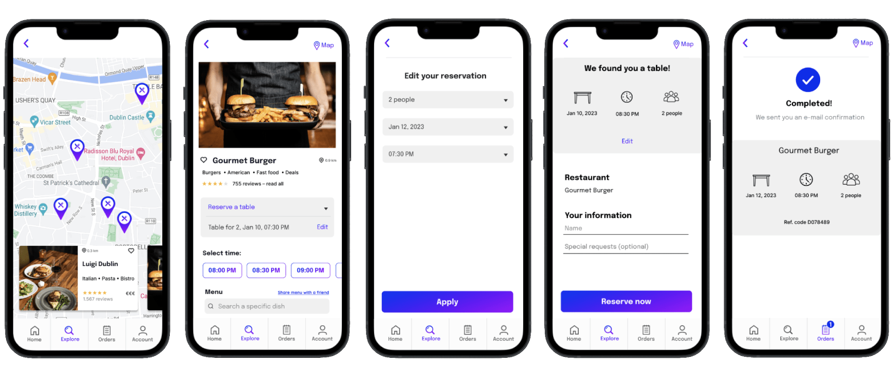

Dine Hub

In this project, I redesign an existing restaurant reservation mobile application ReserveOut, based on UX research findings. Consumers use smartphone apps for finding restaurants, reading reviews and booking reservations. As a result, the types of restaurants recommend service apps are increasing, and various contents are being added daily. The following research contains qualitative and quantitate user research methods, and insights and ideas for a redesign. The purpose of this study is to understand the major pain points users experience in using ReserveOut app and how these contribute to UX issues and low customer loyalty. I will be using usability testing to follow the user’s experience of the app and the obstacles consumers encounter leading up to the point of making a reservation. I will also be using quantitative research techniques to better understand the customer’s experience of the brand and the needs and challenges they face
when booking a reservation. While there are numerous platforms offering mentioned services, they mostly focus on providing one service, and on specific area. Through ReserveOut app redesign I have created a platform that combines them, with an advanced search and filter system that improves search performance through personalization. The final result is a platform called Dine Hub, which offers table reservations, food delivery, and collection. The part I have focused on in my digital prototype is booking a table reservation. New personalized recommendation system will enhance the satisfaction and create loyal customers. I observed that the biggest impact on my prototype and final design had the user research techniques like user survey and interview, and even more so the usability testing. With testing of the original app and my interactive prototype I was able to focus on human-centre design and create a solution that users love.



Read full case study on Medium:
View Case Study